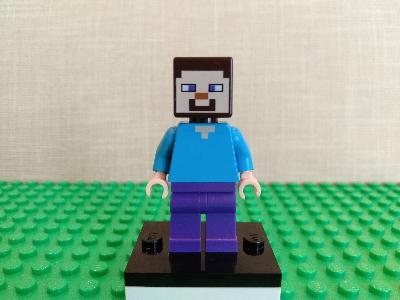
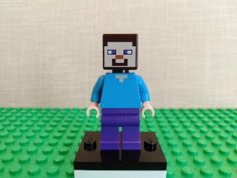

レゴのミニフィグとは?
ミニフィグとはレゴの人形のことです。 基本は顔パーツと胴体パーツと足パーツの3つのパーツで構成されています。 髪の毛をつけたり、帽子をかぶせたり、食べ物をもたせたりすることがきます。 顔パーツにはいくつもの表情があるので、組み合わせて遊ぶことができます。
ミニフィグは必要か？
ミニフィグは必要です。
昔はレゴにミニフィグなんてものはありませんでした。
ミニフィグが最初に登場したのはレゴが生み出されてから10年以上経過してからです。
はじめは今の形とは異なり足の動かないただの人形でした。
それが進化して足も動くいまの形に落ち着いたのです。
不思議なことにミニフィグがあるとレゴに動きがでます。
そして作品の世界観が広がります。
ミニフィグの種類
ミニフィグにはいくつかの種類があります。一番ベーシックなのは黄色い顔、黄色い手をしたミニフィグです。 顔や服の種類が種類が豊富で最も親しまれているタイプになります。警察官や泥棒、消防隊などがあります。

そしてベーシックなタイプに比べると少しスリムな現代っ子タイプもあります。 ディズニープリンセスシリーズやLego社オリジナルのレゴフレンズシリーズのキャラクターたちです。 この子達は目が大きくて可愛らしい表情なのが特徴です。とくに女の子に人気のシリーズです。


他にはトイストーリーやスパイダーマン、ハリーポッター、マインクラフトなど 映画やゲームの世界のキャラクターなどもいます。 このキャラクターもののミニフィグはレゴのセットを購入しないと手に入らないものもあります。
 

ミニフィグの入手方法
ミニフィグの入手は難しくはありませんが、すべてのレゴセットに入っている分けではありません。 とくにアイディアボックスなどのレゴのセットには入っていないのでご注意ください。
入手方法1:レゴセットを購入する
基レゴセットを購入すると同封されていることがあります。
ただし、セット自体の値段が高かったりするため、ミニフィグのみ欲しい人は別の方法を考えたほうがいいかもしれません。
入手方法2:レゴストアでミニフィグセットを購入する
Lego社が運営しているレゴショップへ行けばミニフィグのみを購入することができます。
お値段は3体で1500円くらいです。レゴショップならではのミニフィグもありますので興味のある方は行ってみてください。
入手方法4:ミニフィグパックを購入する
量販店で1袋500円くらいでミニフィグのパックが購入できます。
こちらは中身を選ぶことができないため欲しいものが手に入るとは限りません。
逆にミニフィグのパックでしか手に入らないものもあるため、
発売日直後は品薄になる人気商品です。
入手方法5:ネット通販で購入する
ミニフィグ単体で購入できます。価格はピンキリですが、
選ぶと1,000円は軽く超えてしまう場合もあります。
また、ネットでは互換品といって非正規のものもあるため注意が必要です。
入手方法6:フリマサイトで購入する
安価な値段で入手することが可能です。ただし、こちらもネット同様、互換品といって非正規のものもあるため注意が必要です。
ミニフィグの相場価格
ミニフィグパックやレゴストアの価格をベースに考えると1体500円が基本相場だと考えます。 なのでフリマサイトなどで1体300円程度で売られている場合はお買い得だと考えていいと思います。 ただし、キャラクターものはキャラの人気で付加価値が変わるので1体1,000円を超えてもおかしくありません。

お得にミニフィグを入手する方法
レゴのセットの中にはミニフィグがたくさん入っているセットがあります。 通常、15～16体くらい入って5,000円～6,000円くらいするのですが、 たまに家電量販店なので4,000円くらいで販売されていることがあります。 1体あたりの価格を計算して、300円前後なら買いです。また、レゴのクリスマスカレンダーシリーズも シーズンを過ぎると値崩れして、1体あたりの価格が下がるのでお買い得になります。 このお買い得ミニフィグを探すことも楽しみのひとつですので、ぜひやってみてください。
お得にレゴを入手する方法
レゴは年始になるとほぼ毎年福袋が出されます。中身は選ぶことができませんが、お得に購入することができます。 店舗購入よりネットで購入したほうが安い場合もありますが、家電量販店や大手スーパーなどのほうが安い場合も多々あります。 値段は時価で変動しますので、お店に足を運んでみてください。